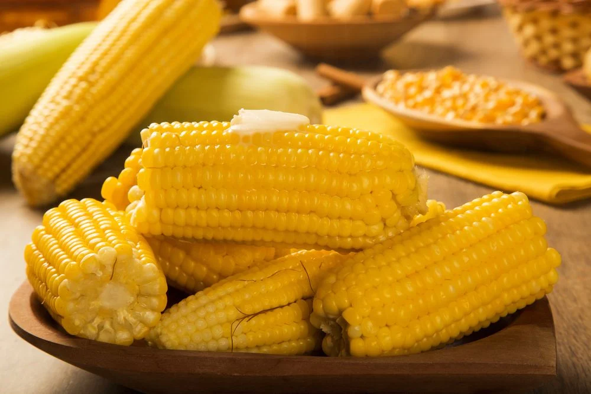

Boiled Corn

Traditional boiled corn topped with butter
Boiled corn cob is one of the dishes that we must have in a traditional June party. It is easy to make it, it is delicious, and nobody can resist.
Traditionally we add butter on top, but you can try other toppings like fresh herbs, spices or whatever you like. Let's learn how to boil corn on the cub!
Ingredients:
- 5 corn cobs
- Water (enough to cover the corn)
- Salt
- Butter
Directions:
- Remove the hunks and clean corn cobs, and cut them in two parts.
- Bring a large pot of water to a boil with salt.
- Add the corn cobs to the boiling water, uncovered, until the kernels are tender and golden, approximately 15 to 20 minutes.
- When the corn is to yellow and big it's ready.
- Remove the corn from the pot and transfer it to a serving platter.
- Serve it with butter on top or whatever you like.